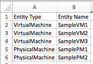

Supported CSV Format¶
csv_to_static_groups has four basic CSV requirements:
- The input file must be a Comma Separated Values (.csv) file.
- The first row must contain headers for each column.
- The two required headers must exist.
- At least one column must have group names.
Required Headers¶
Two of the headers must be “Entity Type” and “Entity Name”.
These columns give csv_to_static_groups information about the entities to place in groups.
- Entity Type contains the entity class
- VirtualMachine
- PhysicalMachine
- Storage
- Cluster
- Entity Name contains the name of the entity
Example of these headers:
Group Names¶
Group names are determined by any remaining column headers IN ORDER from left to right.
Unique combinations of the values in these columns will be created as new groups
Simple Groupings¶
The following sample CSV would add/update/delete 2 groups.
- “Engineering” (4 VMs)
- “Sales” (3 VMs)
Multi-level Groupings¶
The following sample CSV would add/update/delete 4 groups.
- “Engineering_John” (3 VMs)
- “Engineering_Greg” (1 VM)
- “Sales_Bill” (1 VM)
- “Sales_Steve” (2 VMs)

This group level stacking can be repeated indefinitely.
Manually Specifying Grouping Headers¶
You can specify specific grouping headers to change the order of the groupings or specify specific groupings
- For example, to add/update/delete only the department groupings:
- “Engineering” (4 VMs)
- “Sales” (3 VMs) using this CSV:
From this csv:
We can run:
$ ./csv_to_static_groups.py sample_csv.csv --group_headers "Department"
Empty Cells¶
If a cell is empty in any grouping column, the row is still valid, but only considers the columns with content.
For example the following csv would produce 4 groups.
- “Engineering_John” (2 VMs)
- “Sales_Bill” (1 VM)
- “Sales_Steve” (2 VMs)
- “Engineering” (4 VMs)

Notice that a “Engineering” group is created containing every VM that had Engineering in the “Department” header.
Adding a Prefix and/or Suffix¶
A prefix or suffix can be added by simply including another column before or after the grouping columns.
The following would produce these 2 groups:
- temp_Engineering_VMs (4 VMs)
- temp_Sales_VMs (3 VMs)